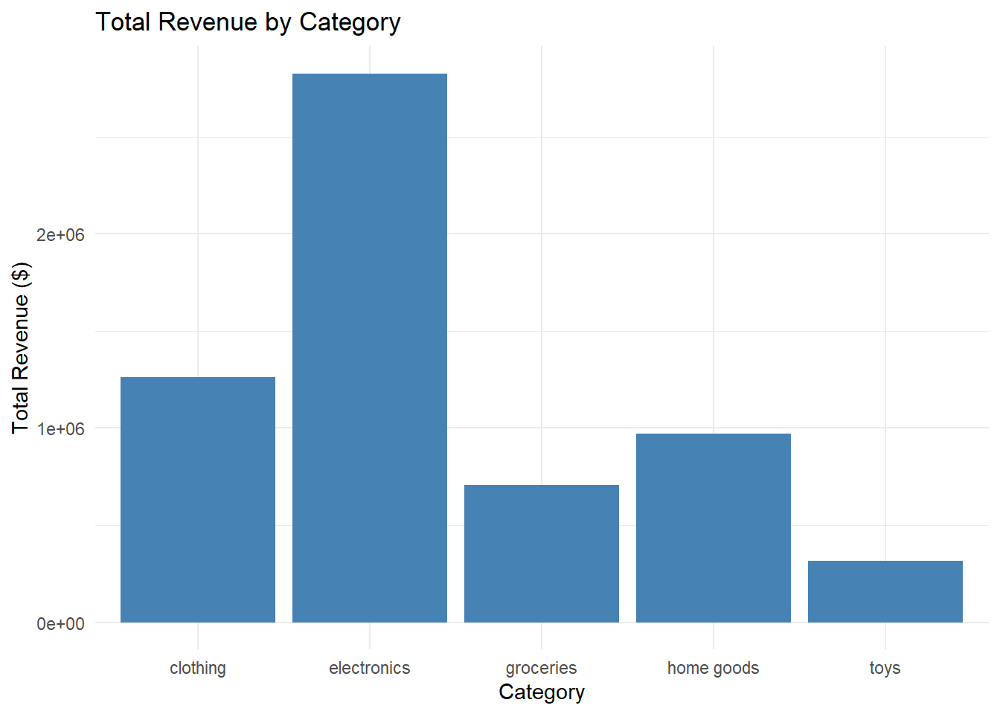
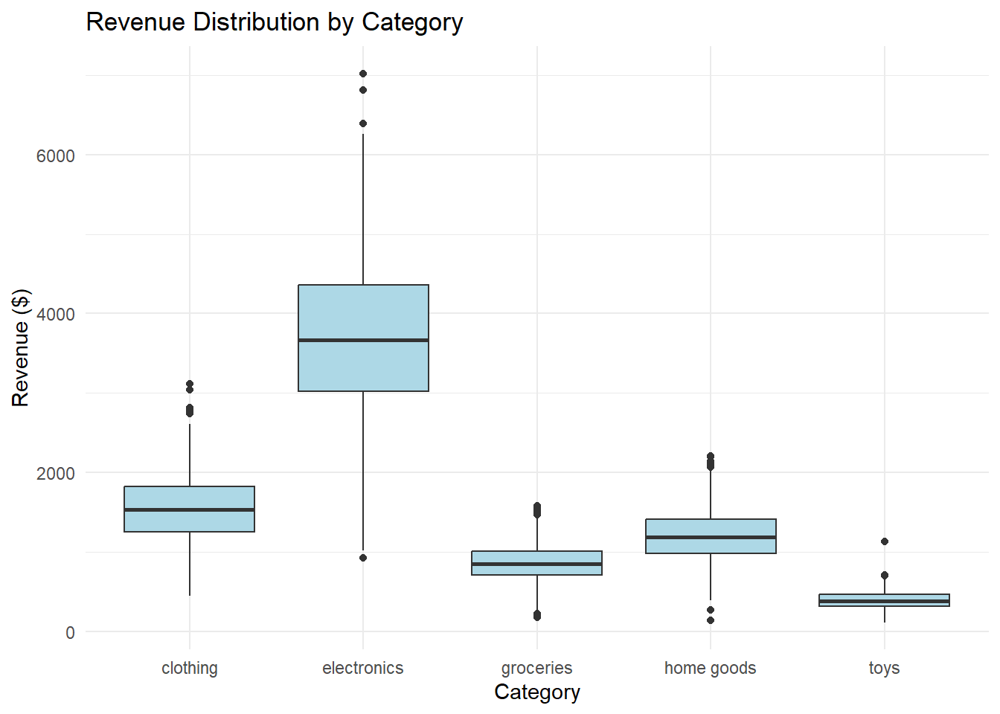
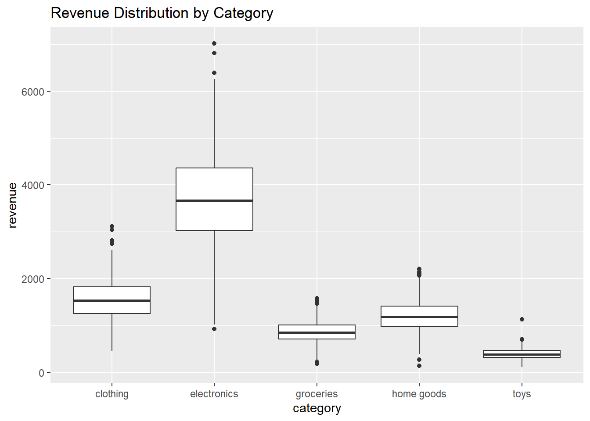

library(tidyverse)
sales <- read_csv("retail_sales_clean.csv")DSA 504 — Class 22: Reproducible Reporting with Quarto
Date: Wednesday, Nov 18 — HW6 is assigned at the end of class.
Why Reproducible Reporting?
Every report you’ve made so far this semester has lived in a notebook or script, with results you’d have to manually copy into an email or a slide if someone else needed to see them. That copy-paste step is exactly where real mistakes happen: a chart gets pasted from last week’s run, a number gets fat-fingered, a Word doc goes stale the moment the underlying data changes.
A Quarto document solves this by combining three things in one file: narrative text (like this paragraph), live code (that actually runs), and the results of that code (numbers, tables, charts) – woven directly into the finished report. Change the data, click Render again, and every number and chart updates itself. Nothing to copy, and nothing to go stale.
Anatomy of a Quarto Document
Three pieces, all visible in this very file:
- The YAML header – the
---block at the very top of this file, withtitle:andformat:. This is metadata about the whole document: what to call it, and what kind of file to produce when rendered (html,pdf, ordocxare the common choices). - Markdown text – ordinary prose, like this bullet list, written in the same Markdown syntax you’ve seen in Jupyter notebooks all semester (
##for a heading,**bold**,-for a bullet). - Code chunks – a block of real, running R code, marked off by three backticks and curly braces:
```{r}to start,```to end. Everything between those markers actually executes when you render.
Here is a real code chunk, loading the dataset used throughout this file:
Notice nothing printed above except the code itself – that’s the #| message: false chunk option on the first line, which tells Quarto to run this code but hide the routine “columns loaded” message read_csv() normally prints. Chunk options always start with #| and go at the top of a chunk, before any real code.
Inline Code – Weaving a Computed Value into a Sentence
This is the single most useful trick in reproducible reporting: putting a small piece of R code directly inside a sentence, so the number itself updates automatically every time you re-render.
This dataset contains 4014 rows. The highest-revenue store is Utica.
Look at the raw text of this file (not the rendered output) to see how that works: a single backtick, the letter r, a space, then a short piece of R code, then a closing backtick – all sitting right inside a normal sentence. When rendered, each one is replaced by whatever that code actually evaluates to. Change the data, re-render, and both numbers update themselves – no manual editing, and no risk of the text and the number disagreeing with each other.
A Full Example: Combining Classes 19–21 Into One Report
This section ties together everything from the last three classes – loading data, cleaning, dplyr analysis, and a ggplot2 chart – into one flowing narrative, exactly the way a real report would present them.
Revenue by Category
category_totals <- sales |> group_by(category) |> summarise(total_revenue = sum(revenue))
ggplot(category_totals, aes(x = category, y = total_revenue)) +
geom_col(fill = "steelblue") +
labs(title = "Total Revenue by Category", x = "Category", y = "Total Revenue ($)") +
theme_minimal()
As Figure 1 shows, electronics generates by far the most revenue of any category – more than double the next closest category. This single chunk does everything: computes the summary with dplyr (Class 20), builds the chart with ggplot2 (Class 21), and embeds the finished image directly into this report, all from one source file.
Note the #| label: and #| fig-cap: chunk options above – label gives the chunk (and its figure) a name Quarto can cross-reference, and fig-cap sets the caption shown under the chart. The @fig-category-revenue reference in the text above the chunk automatically turns into “Figure 1” (or whichever number is correct) when rendered – another thing you never have to update by hand if a chart’s position in the report changes later.
Controlling What Shows Up: More Chunk Options
The chunk above computed something (top_category), but you never saw the code for it in the rendered output – only its result will show up if we reference it inline. That’s #| echo: false: it means “run this code, but don’t show the code itself in the final report.” This is the normal choice for a report meant for a non-technical reader, who cares about the finding (electronics leads with $2,826,160 in total revenue) and not the code that produced it.
A quick reference for the chunk options used in this file:
| Option | What it does |
|---|---|
echo: false |
Hide the code, but still run it and show its output |
eval: false |
Show the code, but don’t actually run it |
message: false |
Suppress routine informational messages (like read_csv()’s column list) |
warning: false |
Suppress warning messages |
label: |
Name a chunk, so it can be cross-referenced elsewhere in the report |
fig-cap: |
Set a caption for a chunk that produces a chart |
Rendering This Document
In RStudio, click the Render button at the top of the editor pane – this runs every code chunk in order and opens the finished report. From a terminal, the same thing happens with:
quarto render DSA504_Class22_Reproducible_Reporting.qmdChanging format: html in the YAML header at the top of this file to format: pdf or format: docx produces a PDF or Word document instead – same content, same code, just a different final file type. This is part of the point: the underlying document doesn’t change; only the output format does.
Guided Practice
Work through these in your own copy of this file, then render it to see your results. Each one has been tested and confirmed correct.
Exercise 1. Add a code chunk that computes the store with the lowest total revenue, and reference it inline in a sentence (the same way the highest-revenue store was referenced above).
# YOUR CODE HERE
lowest_store <- sales |> group_by(store) |> summarise(total = sum(revenue)) |> arrange(total) |> slice(1) |> pull(store)Your sentence here: Rendered sentence: > The lowest-revenue store is Albany.
Exercise 2. Add a chunk with #| echo: false that creates a box plot of revenue by category (from Class 21), so only the chart appears in the rendered report, not the code that made it.
YOUR CODE HERE
#| message: false
#| label: fig-revenue-boxplot
#| fig-cap: "Distribution of revenue by category"
ggplot(sales, aes(x = category, y = revenue)) + geom_boxplot(fill = "lightblue") + labs(title = "Revenue Distribution by Category", x = "Category", y = "Revenue ($)") + theme_minimal()

Exercise 3 (stretch). Add one more inline-code sentence that reports the average units_sold across the whole dataset, rounded to one decimal place (hint: round(..., 1)).
On average, each transaction involved 60.9 units.
Solutions
Try each exercise yourself first. These have been tested and confirmed correct.
Solution — Exercise 1
lowest_store <- sales |> group_by(store) |> summarise(total = sum(revenue)) |> arrange(total) |> slice(1) |> pull(store)The lowest-revenue store is Albany. (Albany — confirmed against the same result from Classes 12–14’s SQL and pandas totals.)
Solution — Exercise 2

Solution — Exercise 3
The average units sold per transaction is 60.9.
Wrap-Up
Recap: the three parts of a Quarto document (YAML header, Markdown text, R code chunks); inline code for weaving a live, auto-updating value into a sentence; chunk options (echo, eval, message, warning, label, fig-cap) for controlling what shows up in the final report; cross-referencing a figure with @fig-label; and rendering to HTML, PDF, or Word from the same source file.
Common mistakes to watch for:
- Forgetting the closing three backticks on a code chunk — this breaks rendering for the rest of the document, not just that one chunk
- Using regular quotes (
'or") instead of backticks (`) for inline code — backticks are required, and they’re easy to miss on a keyboard - Putting a chunk option on its own line without the
#|prefix — this gets treated as a comment, or as real R code, not as an instruction to Quarto - Forgetting that
echo: falsehides the code but still runs it — it’s not the same as skipping the computation entirely (that’seval: false)
HW6 is assigned today.
Before next class (Nov 23): Class 23 covers writing reliable code — debugging and testing — the last R-adjacent topic before the semester moves into Git and the final project stretch. HW6 is due before that class.